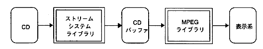
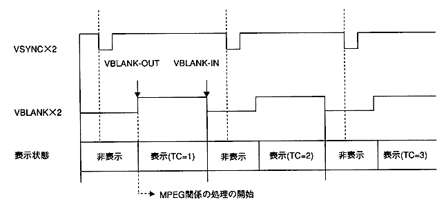

★PROGRAMMER'S GUIDE
★MPEGライブラリ
★PROGRAMMER'S GUIDE
★MPEGライブラリ
| アプリケーション | |
|---|---|
| ストリームシステム ライブラリ | MPEGライブラリ |

図4.2 VDP2出力時の処理のタイミング

［書 式］ Sint32 trFunc(void *dst, void *src, Sint32 nbyte) ［入 力］ dst ：転送先アドレス src ：転送元アドレス nbyte ：転送バイト数 ［関数値］ エラーコード
★PROGRAMMER'S GUIDE
★MPEGライブラリ